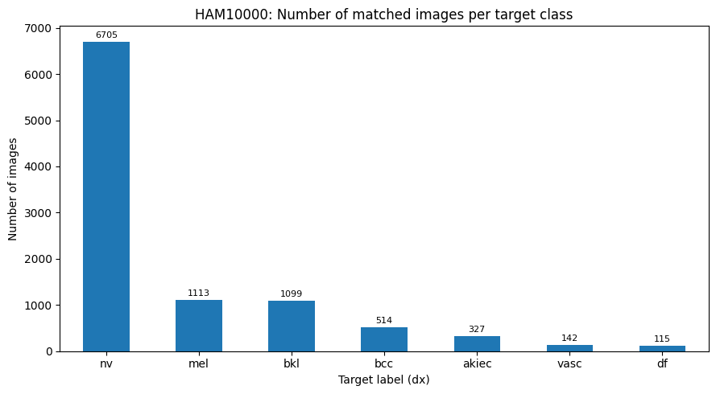
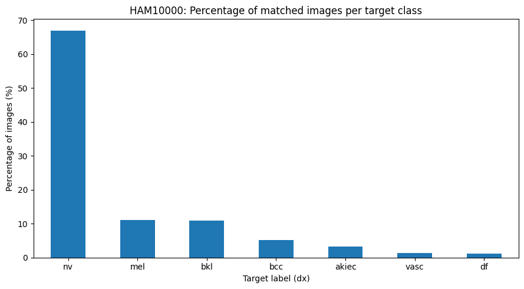
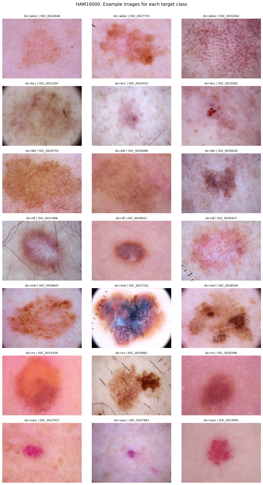
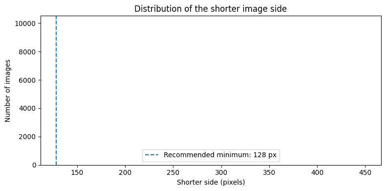

PF4DS / IMAGE DATASET
Skin lesions, in focus.
A quality check and visual exploration of HAM10000 dermatoscopic images, matched to their diagnostic categories.
DERMATOSCOPY10,015 IMAGES7 DIAGNOSTIC CLASSES
01 / DATASET OVERVIEW
One image, one diagnosis.
HAM10000 (Human Against Machine with 10,000 training images) is a collection of dermatoscopic images of common pigmented skin lesions. The notebook matches image filenames to the image_id and uses dx as the target label.
Validation result
All 10,015 metadata rows matched an image file and had a target label. The two selected image folders contained 10,015 paths and 10,015 unique IDs; no duplicate IDs were detected.
The target distribution is imbalanced: the nevus class (nv) contains about two thirds of the images. Class-aware evaluation and sampling should be considered in later modeling.
02 / TARGET DISTRIBUTION
Seven classes, unevenly represented.
Counts and percentages among the 10,015 unique images matched to a non-empty diagnostic label.


| Code | Diagnosis | Images | Share |
|---|---|---|---|
| nv | Melanocytic nevi | 6,705 | 66.95% |
| mel | Melanoma | 1,113 | 11.11% |
| bkl | Benign keratosis-like lesions | 1,099 | 10.97% |
| bcc | Basal cell carcinoma | 514 | 5.13% |
| akiec | Actinic keratoses / intraepithelial carcinoma | 327 | 3.27% |
| vasc | Vascular lesions | 142 | 1.42% |
| df | Dermatofibroma | 115 | 1.15% |
Class names are the diagnostic abbreviations used by the dataset. The class imbalance means overall accuracy alone may hide weak performance on rare diagnoses.
03 / REPRESENTATIVE IMAGES
Lesions across the categories.
Notebook samples (three per class) show the visual variation in the dataset. Images are grouped by their dx target and retain their source image IDs.

How labels are matched
The notebook uses the filename stem as image_id, then joins it to the metadata CSV. Images are counted once per ID, so copies in other folders cannot inflate the unique-image total.
04 / IMAGE PROPERTIES
Consistent dimensions, variable file sizes.
Readable-image checks succeeded for all 10,015 matched images. Every image measures 600 × 450 pixels (aspect ratio 1.33); file size varies.




05 / SOURCE & METHOD
Explore the source dataset.
Dataset by ViDIR Group, Department of Dermatology, Medical University of Vienna, distributed on Kaggle.
This page summarizes the saved outputs in the image-analysis notebook. The reported counts describe dataset coverage and image properties; they are not diagnostic guidance or model-performance results.